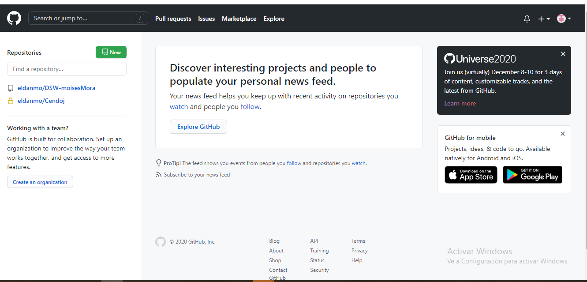

Creación de la cuenta

GitHub es el mayor proveedor de alojamiento de repositorios Git, y es el punto de
encuentro para que millones de desarrolladores colaboren en el desarrollo de sus proyectos. Un
gran porcentaje de los repositorios Git se almacenan en GitHub, y muchos proyectos de código
abierto lo utilizan para hospedar su Git, realizar su seguimiento de fallos, hacer revisiones
de código y otras cosas. Por tanto, aunque no sea parte directa del proyecto de código abierto
de Git, es muy probable que durante tu uso profesional de Git necesites interactuar con GitHub
en algún momento.
Este capítulo trata del uso eficaz de GitHub. Veremos cómo crear y gestionar una cuenta, crear y
gestionar repositorios Git, también los flujos de trabajo (workflows) habituales para participar
en proyectos y para aceptar nuevos participantes en los tuyos, la interfaz de programación de
GitHub (API) y muchos otros pequeños trucos que te harán, en general, la vida más fácil.
Lo primero que necesitas es una cuenta de usuario gratuita. Simplemente visita
https://github.com, elige un nombre de usuario que no esté ya
en uso, proporciona un correo y una contraseña, y pulsa el botón verde grande “Sign up for GitHub”.
Lo siguiente que verás es la página de precios para planes mejores, pero lo puedes ignorar por el
momento. GitHub te enviará un correo para verificar la dirección que les has dado. Confirmar la
dirección ahora, es bastante importante (como veremos después).
Si pulsas en el logo del gato con patas de pulpo en la parte superior izquierda de la pantalla
llegarás a tu escritorio principal. Ahora ya estás listo para comenzar a usar GitHub.
GitHub. (30 de octubre de 2020). Where the world builds software. Recuperado de https://github.com/
GitHub. (30 de octubre de 2020). Where the world builds software. Recuperado de https://github.com/
GIT. (21 de Septiembre de 2020). Git - Book. Recuperado de https://git-scm.com/book/es/v2/GitHub-Creación-y-configuración-de-la-cuenta
aprendiendoarduino. (30 de octubre de 2020). Aprendiendo Arduino. Recuperado de https://aprendiendoarduino-wordpress.com/tag/git/
confecoopantioquia. (30 de octubre de 2020). Confecoop Antioquia. Recuperado de https://www.confe-coopantioquia.coop/convenio/8/unad
ssam. (30 de octubre de 2020). SSAM - UNAD. Recuperado de http://ssam.unad.edu.co/